Kubernetes turns a container image into a managed, self-healing, scalable service. The prompt for this laboratory is to deploy containerized applications on a Kubernetes cluster and configure Deployments, Services, scaling and rolling updates. A minimal solution runs kubectl create deployment, exposes it and scales it once, which shows the commands but not whether an update is safe, what a bad release does, or how the cluster reacts to load and failure.
Naive manifests share five weaknesses: the Recreate strategy removes all capacity during an update; without a readiness probe the Service routes traffic to Pods that are not ready; a broken image can replace healthy Pods; a fixed replica count cannot follow load; and default security settings leave a writable filesystem and default Linux capabilities.
To measure these effects we built KubePulse, a zero-dependency Node.js microservice that reports the Pod, node and release that served each request, together with a three-node Kubernetes platform (kind v0.27.0, Kubernetes v1.32.2: one control-plane and two workers). One Dockerfile produces three releases: 1.0.0, 2.0.0 and a deliberately broken 3.0.0-broken that never becomes Ready. All figures in this report are real command output captured from the running cluster; the raw text is stored in docs/evidence/.
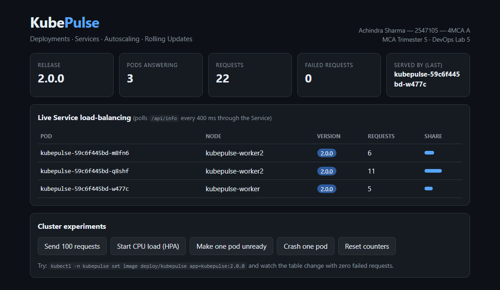
A three-node cluster gives real scheduling, node spread and node-level behaviour. NodePort 30080 is published to the host as localhost:8088. Release images are loaded into the nodes with kind load docker-image because kind nodes cannot see the host image store, so the Deployment uses imagePullPolicy: IfNotPresent.
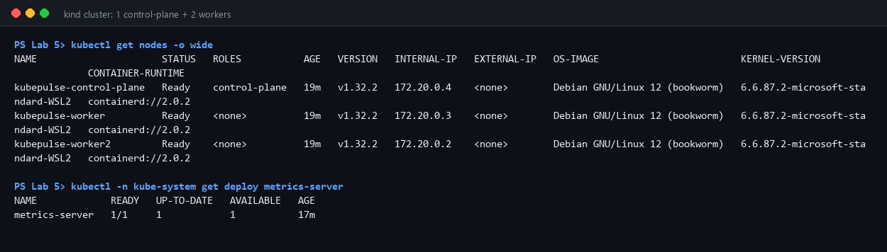
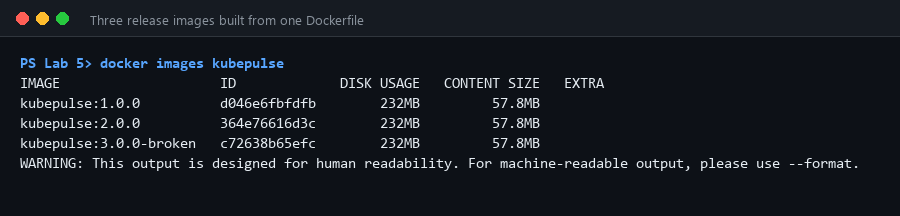
To give empirical proof of improvement we compare two Deployments: a baseline anti-pattern (k8s/unoptimized/naive-deployment.yaml) and the production manifest (k8s/base/20-deployment.yaml), applied with kustomize alongside a ConfigMap, Secret, two Services, a HorizontalPodAutoscaler and a PodDisruptionBudget.
| Evaluation Metric | Baseline (naive-deployment.yaml) | Production (k8s/base) | Improvement Delta |
|---|---|---|---|
| Update Strategy | Recreate (all Pods killed first) | RollingUpdate, maxSurge 1, maxUnavailable 0 | Capacity never drops |
| Traffic Gating | None; routed on container start | Readiness probe + minReadySeconds 5 | Only working Pods serve |
| Self-Recovery | No probes; hung process stays | Startup, readiness and liveness probes | Automatic restart |
| Graceful Stop | Abrupt termination | preStop sleep 5 + SIGTERM drain | No in-flight loss |
| Capacity | Fixed 3 replicas, no requests | Requests/limits + HPA 3–8 | Elastic scaling |
| Placement | Scheduler default | Topology spread + PDB (1) | Node-loss tolerant |
| Security Context | Defaults | Non-root UID 1000, read-only rootfs, drop ALL, seccomp | Least privilege |
| Configuration | Baked into image | ConfigMap, Secret, Downward API | Config outside image |
strategy: { type: RollingUpdate, rollingUpdate: { maxSurge: 1, maxUnavailable: 0 } }
minReadySeconds: 5 progressDeadlineSeconds: 60
readinessProbe: { httpGet: { path: /readyz, port: http }, periodSeconds: 3 }
livenessProbe: { httpGet: { path: /healthz, port: http }, periodSeconds: 10 }
lifecycle: { preStop: { exec: { command: ["sleep", "5"] } } }
# replicas omitted on purpose: the HPA owns the replica count
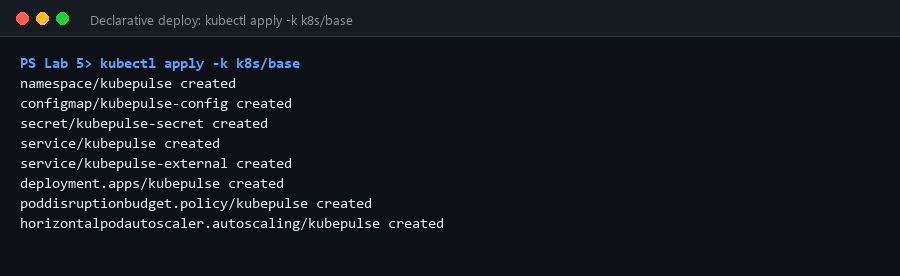
kubectl apply -k k8s/base) creates every object.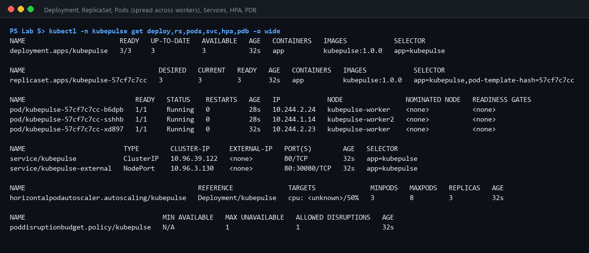
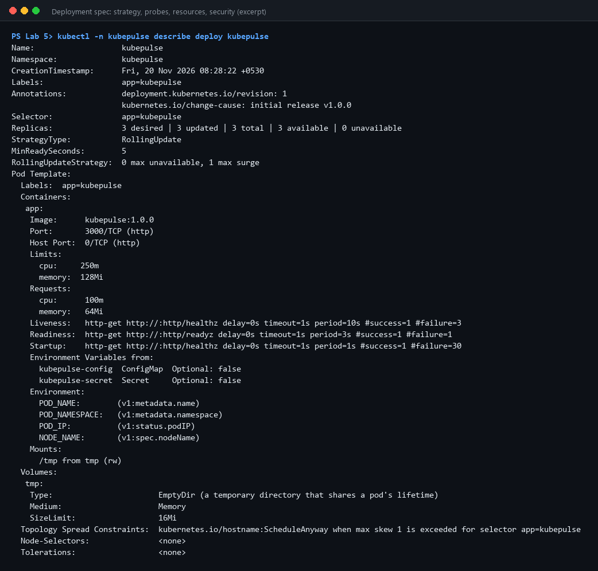
Two Services expose the Pods selected by label app=kubepulse: a ClusterIP kubepulse (DNS kubepulse.kubepulse.svc.cluster.local) for in-cluster clients and a NodePort kubepulse-external (30080) for the host. Both use a named targetPort: http.
Finding: the first validation sent 60 sequential requests through the NodePort and all 60 reached one Pod. kube-proxy is a Layer-4 balancer that selects a backend per TCP connection, and an HTTP keep-alive client reuses one connection. The API now replies Connection: close, so every request is re-balanced. Long-lived or gRPC clients need client-side balancing, a headless Service or a service mesh.
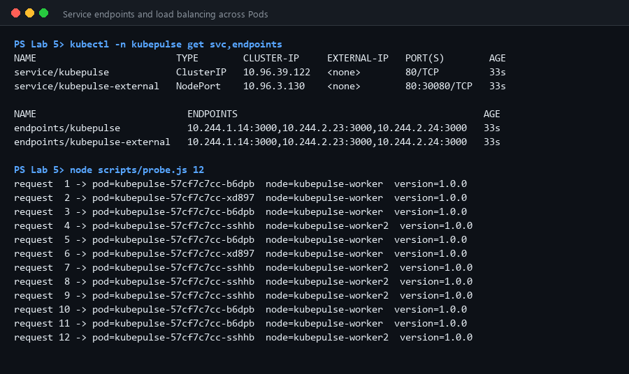
Four Node.js suites query the live cluster and exit non-zero on failure; the same scripts run in CI.
| Suite | Command | Checks | Result |
|---|---|---|---|
| Deployment & Service | npm run validate:deploy | 9 | 9 PASSED |
| Self-Healing | npm run validate:resilience | 4 | 4 PASSED |
| Rolling Update | npm run validate:rollout | 5 | 5 PASSED |
| Scaling | npm run validate:scaling | 6 | 6 PASSED |
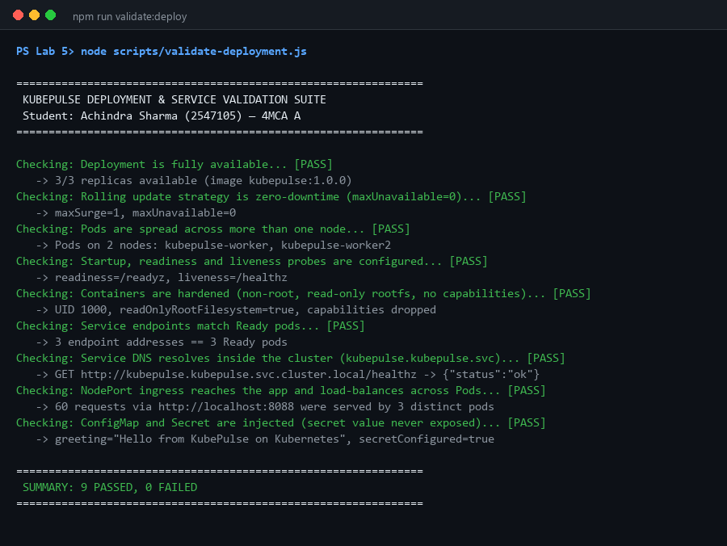
The self-healing suite exercises each probe on a live Pod. Deleting a Pod made the ReplicaSet create a replacement. Forcing readiness to fail removed the Pod IP from the Service endpoints while its restart count stayed unchanged, and it rejoined when ready. Crashing the container made the kubelet restart it (restartCount 0 → 1). This demonstrates that readiness controls traffic while liveness controls restarts.
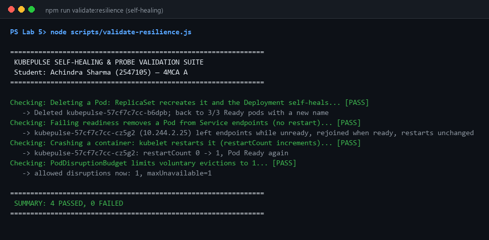
A background generator sends a request every 40 ms through the NodePort on independent connections (3 s timeout). A request fails on any network error, timeout or non-2xx status. Releases are changed with real kubectl commands while traffic runs.
| Step | Requests | Failed | Observation |
|---|---|---|---|
| v1 → v2 rolling update | 675 | 0 | 395 served by v1.0.0, 280 by v2.0.0 (both live during the roll) |
| Bad release 3.0.0-broken | 796 | 0 | Rollout stalled (available 3, unavailable 1); all served by v2.0.0 |
| kubectl rollout undo | 8 | 0 | v2 restored under traffic |
The bad release is harmless because maxUnavailable: 0 forbids removing an old Pod until its replacement is Ready, and the broken Pod never passes /readyz.
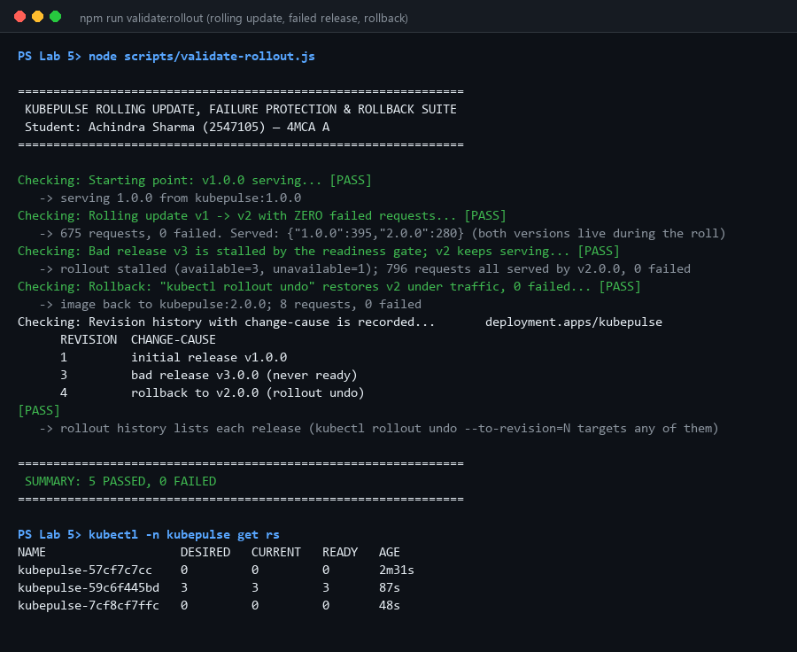
The identical v1 → v2 update was then run against both manifests under the same traffic. The naive Recreate Deployment failed 7 of 29 requests; the production manifest failed 0 of 910.
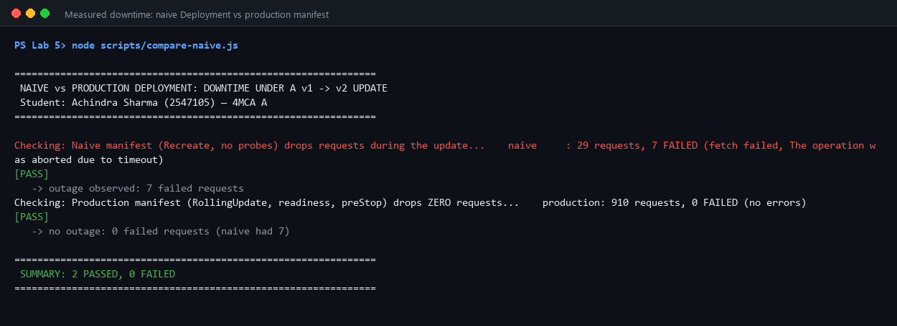
The HPA targets 50% of the CPU request (100 m) between 3 and 8 replicas, scaling up by 2 Pods per 15 s and down by 1 Pod per 30 s after a 60 s window (shortened from the 300 s default so scale-in is observable). The Deployment omits replicas so kubectl apply cannot fight the autoscaler. Manual kubectl scale to 5 worked and was then overridden by the HPA back to 3 when idle. Load through /api/load drove CPU to 230% of the request and the HPA scaled out; after load stopped it scaled in (6 → 5 observed).
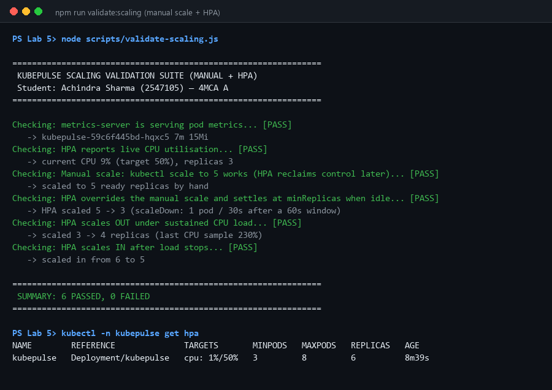
We implemented eight production Kubernetes engineering initiatives:
rollout undo and change-cause history recover.kubeconform schema validation and a real kind cluster running the deploy, resilience and rollout suites.| Problem | Root Cause | Resolution |
|---|---|---|
| All requests reached one Pod | kube-proxy balances per TCP connection | API replies Connection: close |
| Rollout test counted only ~50 requests | Synchronous kubectl call froze the event loop and traffic generator | Asynchronous child process |
| Cluster creation failed: port already allocated | Another container held host port 8080 | Publish on 8088 |
| Naive baseline received no traffic | Service uses a named targetPort; baseline port was unnamed | Named the port |
| Wrong rollout-history labels | Annotating after set image races the controller | One atomic kubectl patch |
replicas field fights the HPA.Limitations: kind runs all nodes on one machine, so inter-node network faults and cloud LoadBalancers are not exercised; request counts vary with machine speed and only the zero/non-zero failure outcome is the claim; the default kind CNI does not enforce NetworkPolicy so none is claimed; the Secret is a demo value; the 8-minute HPA suite runs locally rather than in CI.